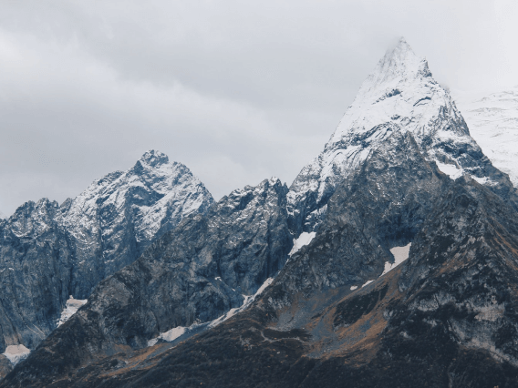
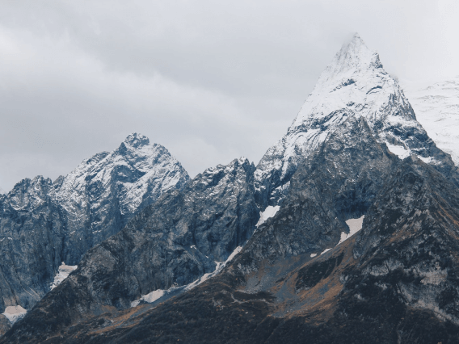
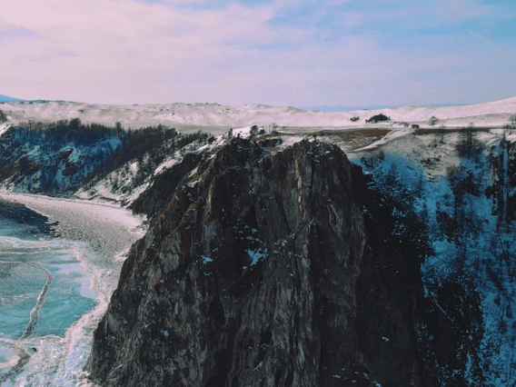
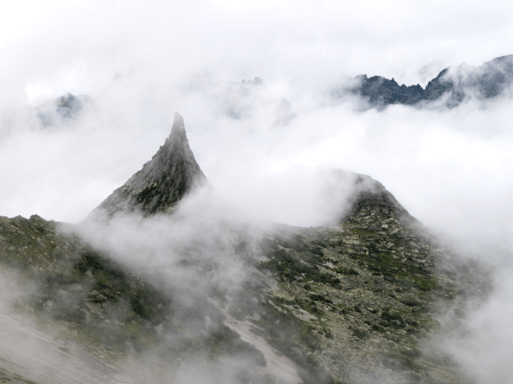
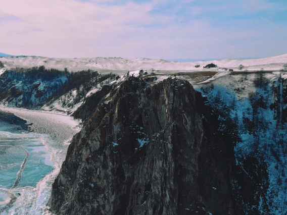
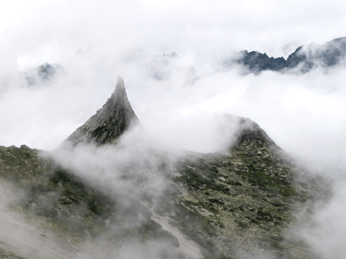

По опросам ВЦИОМ, 95% россиян мечтают куда-нибудь поехать, но только
36% планируют провести отпуск в родной стране. Мол, чего мы тут,
дома, не видели? На самом деле, Россия — это целая вселенная с
ласковым морем юга, густыми лесами Саян и суровыми льдами плато
Путорана. А ещё увидеть все эти красоты можно без миллионов на
счету, загранпаспорта и многочасовых перелетов. Как, например, Вера
Башмакова — смелая молодая мама, которая взяла в охапку троих детей,
усадила их в свою «Ладу» и проехала 20 тысяч километров по родной
стране. Мы выбрали и описали некоторые интересные места, достойные
вашего отпуска.
Здесь, посреди лесов и песчаных дюн, вы сможете увидеть два
водных горизонта — спокойного Куршского залива с одной
стороны и подёрнутого рябью волн Балтийского моря с другой.
Уникальная природная зона на краю российского анклава.
На этом Калининградская область не заканчивается. Для
путешественника и исследователя там же по соседству — самая
западная точка России, Балтийская коса, — и немецкое
наследие россыпи небольших приморских городов. Атмосфера
здешних мест исключает суету, окуная в спокойствие природы и
запах стального, прохладного моря.
Почти весь полуостров находится за Полярным кругом. Саамская
тундра, от которой на юг — тайга, а на север — Ледовитый
океан, прикидывающийся Баренцевым морем.
Возможно, вы смотрели Звягинцева и даже слышали историю
арктического фестиваля в Териберке. Возможно, слово «Хибины»
не осталось под снегом школьных воспоминаний об уроках
географии. Возможно, вы не интересовались пронизывающей
земную кору сверхглубокой скважиной, а от апатитов вас давно
накрывает апатия. Но ваша мечта увидеть северное сияние
начинает сбываться с билетом в Мурманск.
Алтай — одно из красивейших мест в России. В первую очередь
из-за гор: если ехать вдоль хребта, вы увидите склоны,
усыпанные соснами, горные реки и озёра. А если вы откроете в
автомобиле окна, сможете познакомиться с невидимым чудом
здешних мест — горным воздухом.
Климат на Алтае умеренный, поэтому ехать сюда лучше всего
летом. Так вы увидите всё разнообразие местной флоры и
фауны. По лесам Алтая бродят лоси, над хребтами летают орлы,
а на равнинах пасутся косули. И знаменитые манулы — тоже
обитатели Алтайского края.
Всем известен Байкал как крупнейшее озеро в мире. Многие
также знают, что это самый большой источник пресной воды и
одно из красивейших мест в России.
Конечно, это всё так. Но Байкал ещё идеальное место
для соревнований по скийорингу. Это такой вид спорта, когда
лыжник привязывает себя к мотоциклу, и тандем старается
развить как можно бóльшую скорость на льду. В марте 2019
года на фестивале «Байкальская миля» был поставлен мировой
рекорд — 197.011 км/ч.
Сибирь заканчивается не на Урале, а в Карелии: образующая
тайгу сибирская лиственница не растёт западнее Водлозера.
Зато здесь она вымахивает на 30 метров — леса карельских
национальных парков из-за непроходимых болот никогда не
знали топора. Некоторым соснам уже больше чем
полтысячелетия. Прикоснитесь к живому существу, видевшему
солнце раньше, чем увидал его Иван Грозный. В девственном
лесу на сотню километров не встретишь тропы. А на редких
тропинках деревья в паре метров от земли помечены медвежьими
когтями. Чтобы все знали, кто тут хозяин.


 



 


